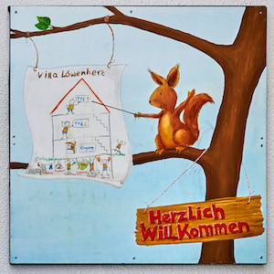
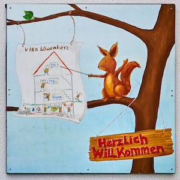

Herzlich willkommen!
"Mit jedem Kind ist etwas Neues in die Welt gesetzt, was es noch nicht gegeben hat, etwas Erstes und Einzigartiges." - Martin Buber (1878 – 1965)
Kinder sind ein Versprechen der Zukunft. Deshalb werden sie behütet, geschützt, geliebt. So sollte es jedenfalls sein. Die Realität sieht leider oft anders aus. Allzu oft bleiben die Jüngsten und Schwächsten unserer Gesellschaft – unsere Kinder – auf der Strecke. Wir schauen hin und können helfen. Wir – die Villa Löwenherz.
 
 Für wen?
Das Therapeutisch-Pädagogische Zentrum (TPZ) Villa Löwenherz kümmert sich um Kinder ab dem 7. Lebensjahr, denen das Leben bisher übel mitgespielt hat. Am Beispiel der Geschichte von Anna wird deutlich, welchen Kindern wir helfen wollen – und können.
Und im Detail?
Wir arbeiten an der Schnittstelle zwischen Jugendhilfe und Kinderpsychiatrie. Unsere Villa steht in Dortmund – und uns sind Kinder aus dem gesamten Umkreis (aber auch aus dem ganzen Bundesgebiet) willkommen!
Villa Löwenherz
Wir haben uns bei der Namensgebung von den Bildern von Alice Jennifer Donner inspirieren lassen. Sie studiert an der Stroganov Moscow State Art-Industrial Academy, Faculty of Monumental and Decorative Art. Ihr ist es in eindrucksvoller Weise gelungen, die Heilung eines traumatisierten Kindes als Bildergeschichte zu erzählen. Der kleine Löwe mit dem hohen Gewaltpotential und der verletzten Seele bekommt Hilfe von der Giraffe. Dadurch kann er das selbstzerstörerische Feuer löschen und wird zu gesunden sozialen Kontakten fähig.
In den Häusern der Villa Löwenherz wird unser Konzept Realität:
Die Einrichtung in Dortmund
Das Wohnumfeld ist großzügig und orientiert sich an den Bedürfnissen der Kinder. Die Kinder leben in kindgerechten Einzelzimmern. Die Gemeinschaftsräume vermitteln Geborgenheit und sind ein wichtiger Ort der sozialen Gemeinschaft. Die Villa Löwenherz Dortmund liegt in der Stadt und doch mitten im Grünen. Auf dem Außengelände kann man spielen oder auch einen eigenen Garten anlegen. Im Rahmen der tiergestützten Therapie ist ein Hund in Begleitung einer Mitarbeiterin zeitweise in der Einrichtung.
Die Einrichtung in Schwerte
Mit den wachsenden Kindern von TPZ 1 und 2 verändern sich auch die Bedürfnisse und Anforderungen an die nun Jugendlichen. So wurde die Villa um eine weitere Gruppe (TPZ3) erweitert, die sich um junge Menschen mit belastenden Kindheitserfahrungen kümmert, damit weitere Schritte der Selbstständigkeit erlernt werden können. Durch eine verlässliche, wertschätzende und respektvolle Grundhaltung des Fachpersonals wird eine individuelle Weiterentwicklung der Persönlichkeit der jungen Menschen ermöglicht. Sie sollen im Rahmen ihrer sozioemotionalen Entwicklung selbstständiger werden, um eine dauerhafte Teilhabe am gesellschaftlichen Leben zu erzielen. Die in TPZ 1 & 2 neu erlernten Handlungsmuster können nun in einem neuen Umfeld erprobt, überprüft und verbessert werden.